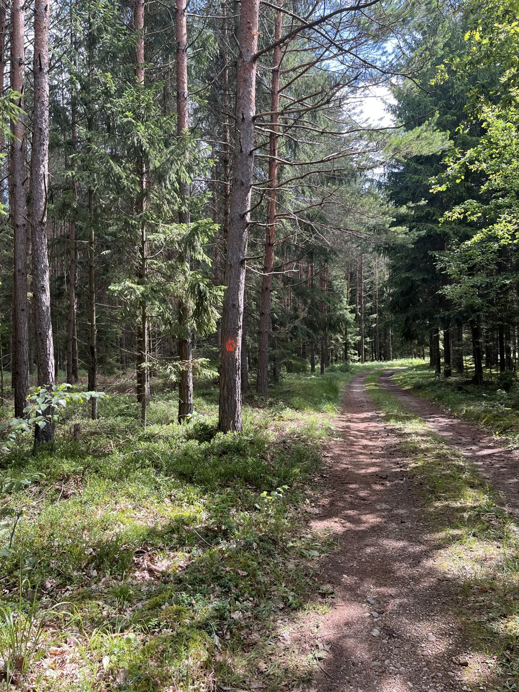

Before heading out, hikers should research the difficulty of their trail, check current conditions and bring the right equipment. The tips below apply to all trails from a flat forest path to a steep mountain trail.
Universal Essential Hiking Gear
Depending on the length and difficulty of the hike, considering bringing:
- Plenty of water (1 liter minimum)
- Comfortable hiking shoes or boots
- A map or GPS device
- First-aid supplies
- Weather-appropriate clothing
- A flashlight or headlamp
- Snacks or food
- A fully charged phone
Before You Start Hiking
Check the weather forecast and look for trail-condition updates before leaving. Tell someone where you are going, especially when hiking alone.
Stay on marked trails and follow posted signs. Trail markers are painted on trees and rocks at eye level. If you have not seen one in a while, turn back to the last marker that you passed.

Current Trail Conditions
Trail conditions can change due to rain, snow, fallen trees, flooding or other inclement weather events. Check conditions before you start and watch for these on the trail:
Wet or Muddy
Roots and rocks get slippery after it rains. Slow down and test your footing.
Icy
In cold months, shaded sections can stay icy all day. Traction devices can help.
Fallen Trees
Storms can block the path. Go around carefully and stay close to the trail.
High Water
Streams rise after heavy rain. Never cross fast-moving water above your knees.